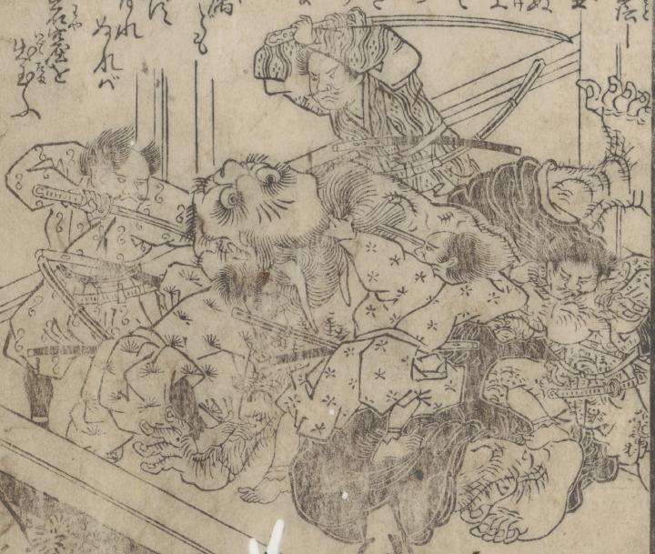

大鬼の姿となった酒呑童子が源頼光一行にとどめをさされている場面が描かれている。
著作者：岡田玉山／出典：親書誌：U426_nichibunken_0432：繪本頼光一代記／日付：2016／資源識別子：U426_nichibunken_0432_0016_0000
Copyright (c)2010- International Research Center for Japanese Studies, Kyoto, Japan. All rights reserved.